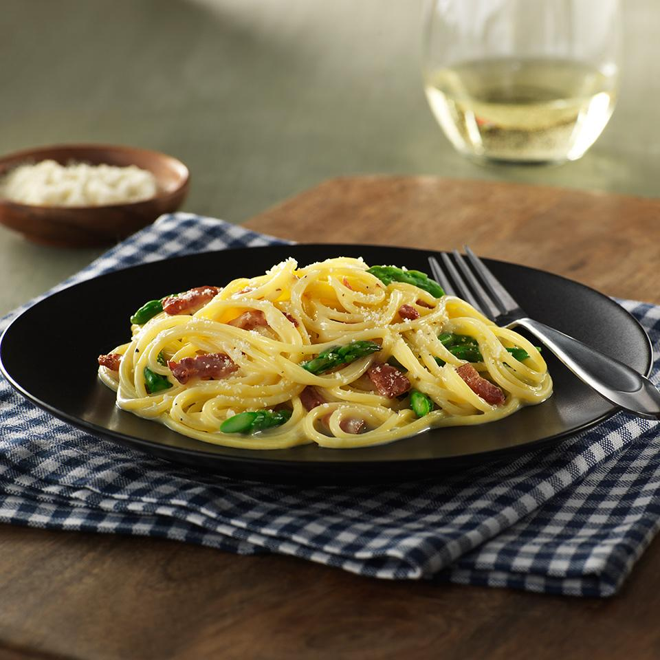

Carbonara

Description
This take on a classic Italian pasta dish serves as an easy, delicious gluten free dinner! Try this scrumptious carbonara recipe with gluten free spaghetti flavored with crispy bacon, asparagus and Parmesan cheese.
Ingredients
- 1 (12 ounce) box Barilla® Gluten Free Spaghetti
- ½ cup chopped onion
- 1 cup chopped raw bacon
- 1 tablespoon vegetable oil
- 1 bunch asparagus, trimmed, cut 1 inch long on a bias
- 5 large egg yolks egg yolks, lightly beaten
- ½ cup grated Parmesan cheese
- 1 pinch Salt and black pepper to taste
Steps
- Bring a large pot of water to a boil. Cook pasta according to package directions.
- Meanwhile, in a skillet, saute onion, bacon and oil for approximately 5 minutes or until bacon is rendered and onions are translucent. Add the asparagus and saute for additional 3-4 minutes, then season with salt and pepper.
- Separately, in a large bowl, mix yolks with cheese. Add salt and pepper and set aside.
- Drain pasta and toss with bacon and asparagus mixture.
- With the heat off, fold the yolk mixture into the pasta and stir vigorously until the yolks thicken up and coat the spaghetti. Serve immediately.